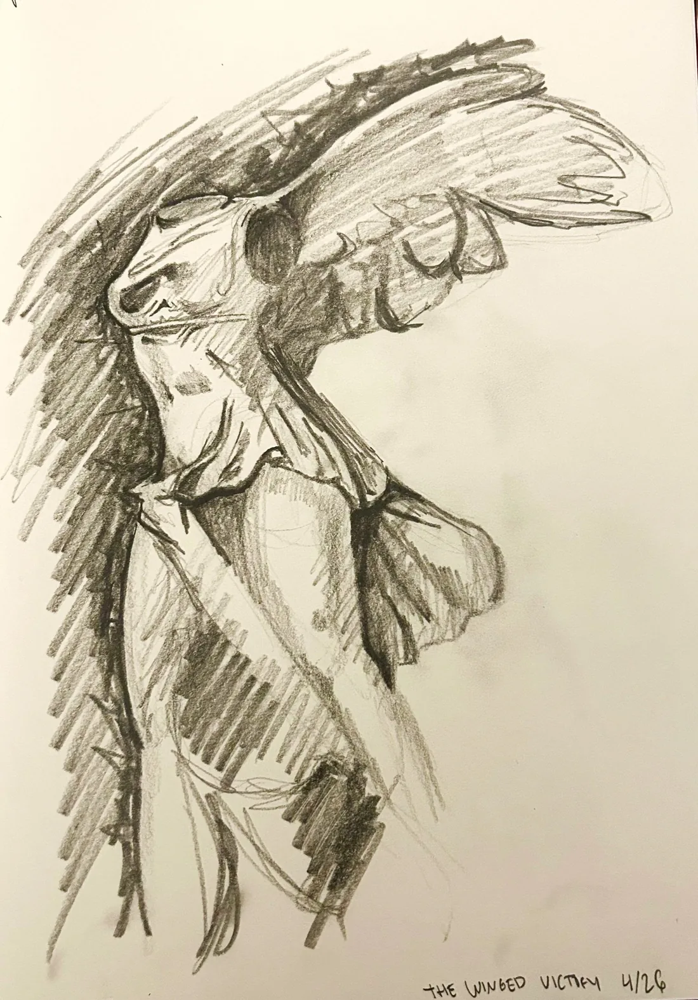
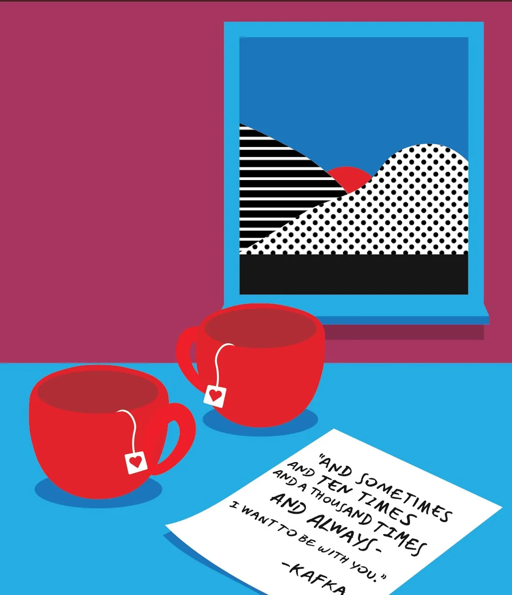
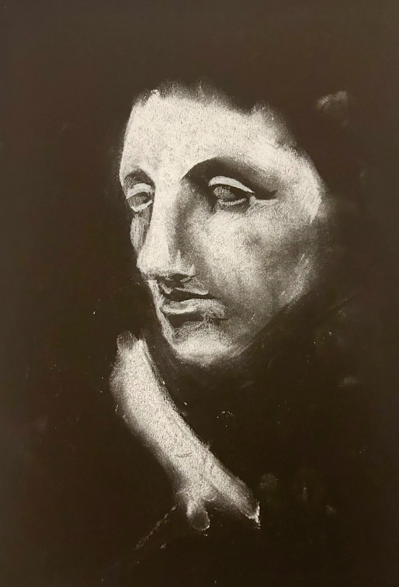
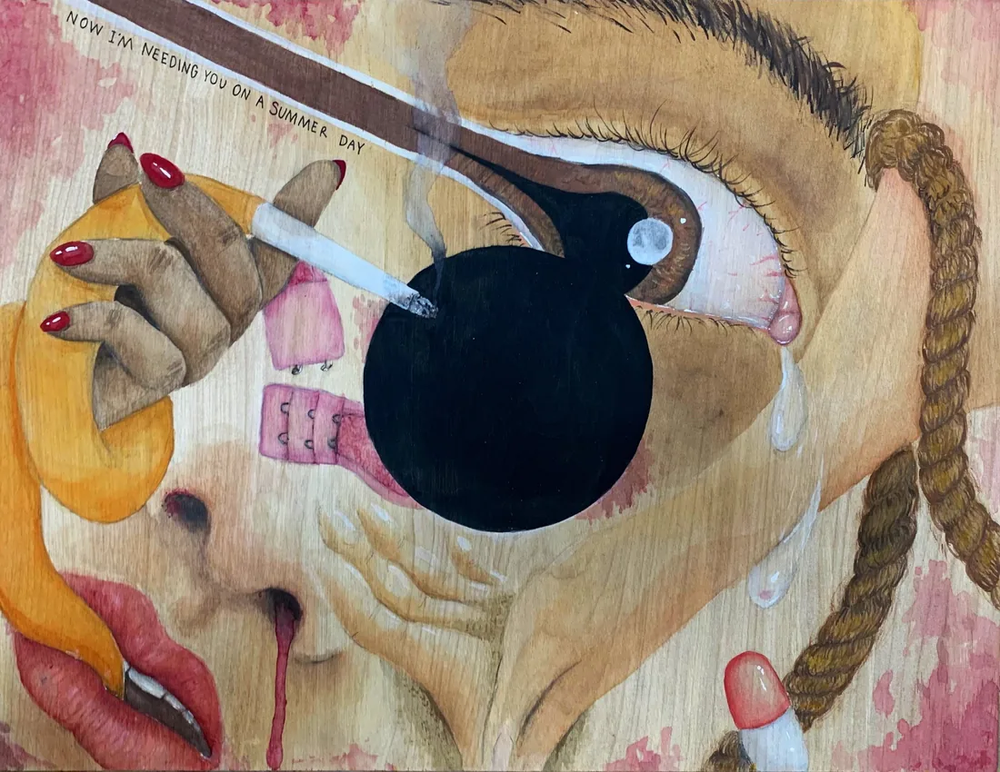
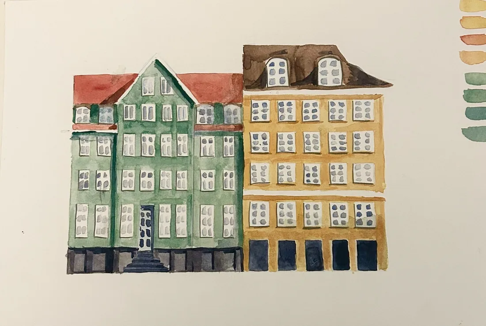
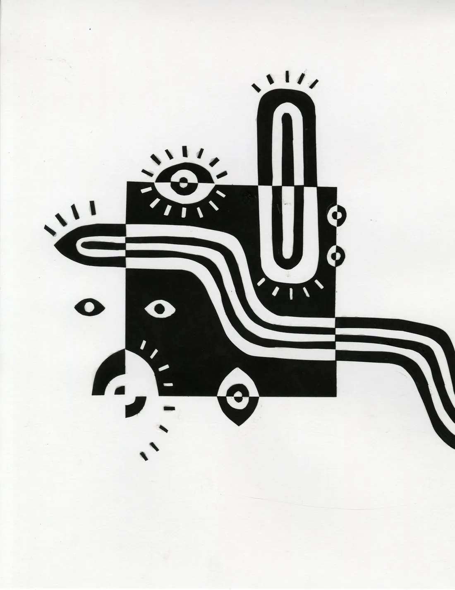
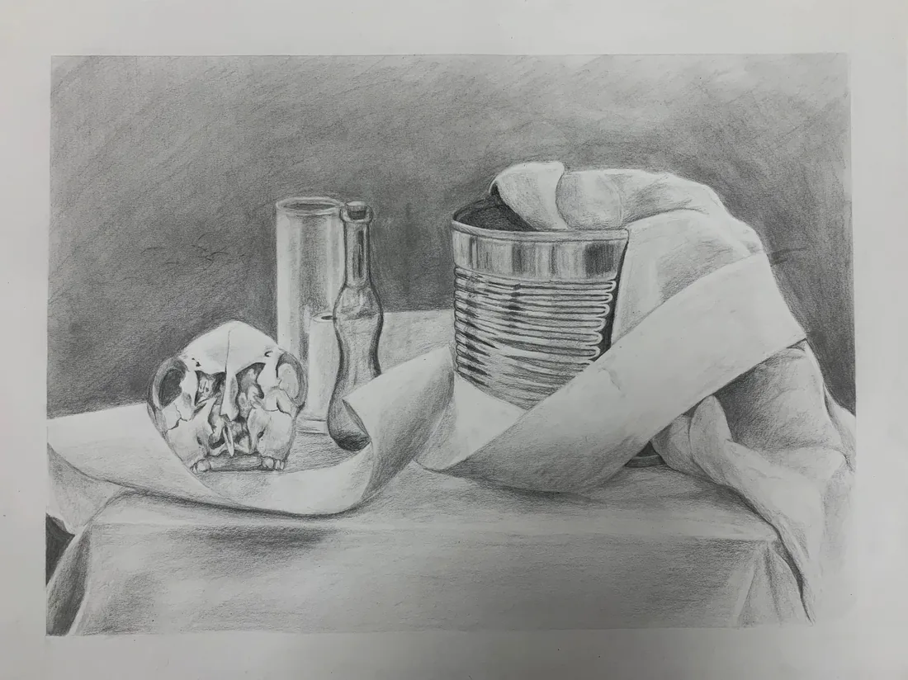
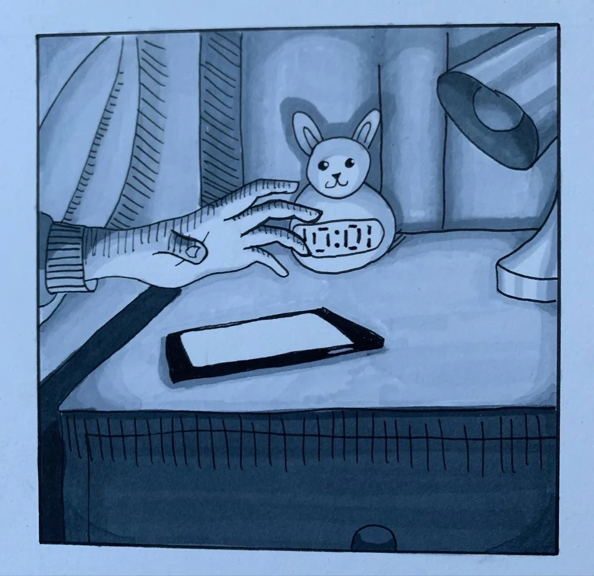
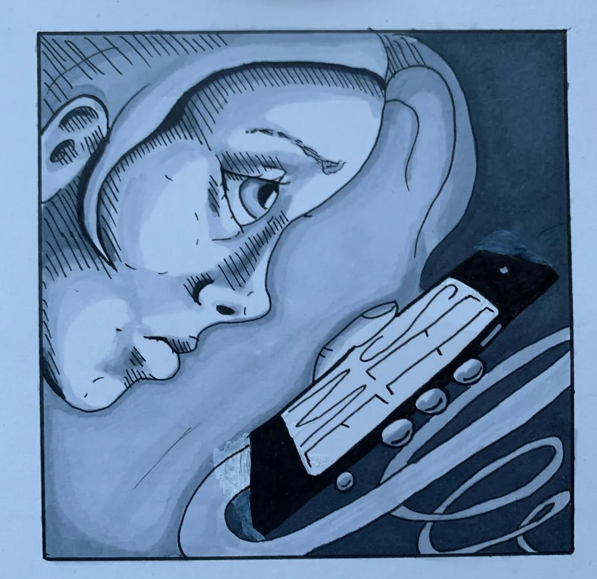

Fine Art · Personal Work
Fine Art
A collection of my fine artwork, exploring themes of identity and emotion across different mediums. Making these pieces is both a passion and a hobby, and a fulfilling way to express myself creatively.














